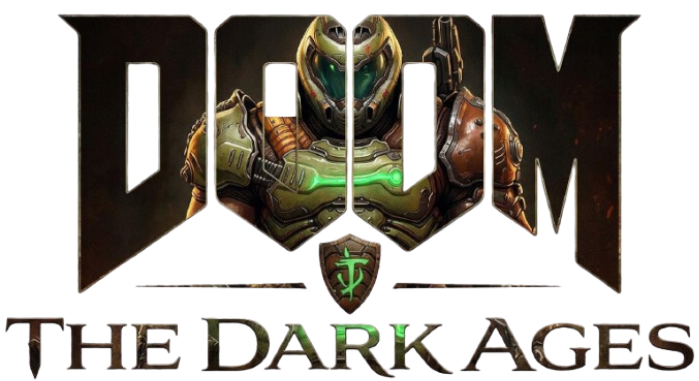

A DOOM: The Dark Ages a Doom Slayer múltjába visz vissza, egy sötétebb, középkorias hangulatú háborúba a Pokol és az emberiség túléléséért. Itt derül ki, hogyan vált a Slayer egy megállíthatatlan, brutális démonirtó fegyverré. A játék lényege továbbra is a gyors, agresszív harc: nem bujkálsz, hanem mész előre és mindent letarolsz, ami él és mozog (főleg ami nem él). Az egész egy nyers, túlzó akciófantázia, ahol a túlélés egyetlen szabálya: rip and tear.
Amennyiben érdekelne további tartalom a játékról nézze meg a többi oldalt is, ahol a Slayer, a démonok és a játék lore-ja kerül bemutatásra.